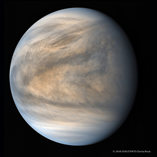

-
[중요]강원 천문대 장기휴관 안내 2019-10-01 예매취소시 취소금액 관련한 안내사항 2019-08-01 스마트폰 예매시 주의사항 2019-04-28 스마트폰 예매 가능 안내 2019-04-05 온라인 예매 시 안내사항 2019-03-25 인터넷 예매 시작시간 안내 2019-03-01 -


- 
제목 : [중요]강원 천문대 장기휴관 안내
안녕하세요. 강원천문대를 찾아주시는 많은 분들께 감사드립니다. 2019년 10월 10일 부터 11월 말까지 아래와 같이 장기 휴관함을 알려드립니다. 휴관기간 동안 천문대 프로그램은 운영하지 않으며, 12월 온라인 예약일정은 추후 홈페이지를 통해 안내하도록 하겠습니다. 새롭게 단장하여 더 나은 모습으로 찾아뵙겠습니다.
휴관 기간 : 2019년 10월 10일 ~ 11월 말 휴관
사유 : 천체투영실 리모델링 사업
문의 전화 : 033 - 372 - 8445
※ 휴관 기간은 공사 일정에 따라 변동될 수 있습니다.

강원천문대 발전기금
후원안내


예약하기
이용안내
날씨보기